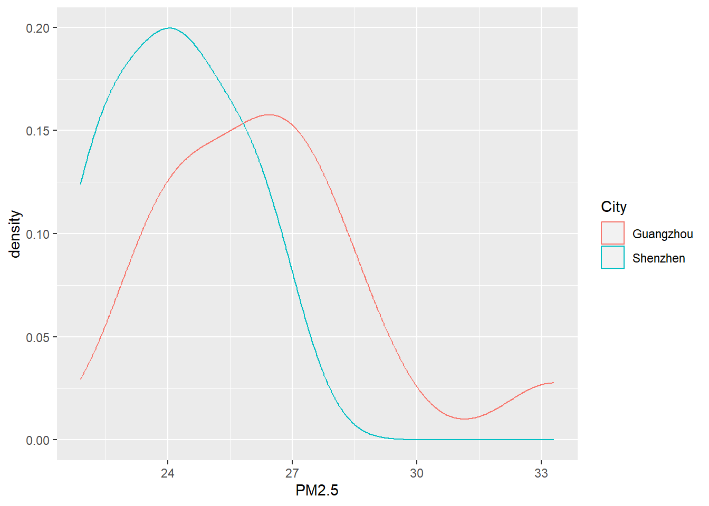

Suppose we want to compare PM2.5 levels in Shenzhen and Guangzhou. To do so, PM2.5 concentrations are measured by two groups with the same instrument.
In 2020, 10 observations are made in Shenzhen:
25.6, 23.7, 21.9, 26.0, 24.5, 22.4, 26.7, 24.6, 22.7, 23.8
and 12 observations are made in Guangzhou:
27.1, 24.2, 27.9, 33.3, 26.4, 28.7, 25.6, 23.2, 24.0, 27.1, 26.2, 24.4
We know from previous data that PM2.5 levels in the two cities generally follow normal distributions. And the standard deviation for Shenzhen and Guangzhou is 2.0 ug/m3 and 3.0 ug/m3, respectively.
It seems Shenzhen has a lower PM2.5 level than Guangzhou. Can such a difference be explained on the basis of chance variation? Can you explain why the spread of the data also contributes to the difference?
Recall the definition of Z-Ratio:
\[Z=\frac {Estimate - Parameter} {SD(Estimate)} \]
Since the task is to compare PM2.5 in the two cities, in the statistical framework, it would be:
H0: Mean PM2.5 level in Shenzhen is the same as that in Guangzhou (\(\mu_1 = \mu_2\))
H1: Mean PM2.5 level in Shenzhen is not the same as that in Guangzhou (\(\mu_1 \ne \mu_2\))
To test the hypothesis (H0), we will use Z-Ratio again, which is defined as:
\[Z=\frac {Estimate - Parameter} {SD(Estimate)} \] In this case, \(Estimate\) is the difference between sample averages ($ - $), and \(Parameter\) is the difference between population mean (\(\mu_1 - \mu_2\)).
\[Z=\frac { (\overline{X_1} - \overline{X_2} ) - (\mu_1 - \mu_2) } {SD(\overline{X_1} - \overline{X_2}) } \] If the two samples are from two normal distributions, \(SD(\overline{X1} - \overline{X_2})\) can be determined as:
\[ SD(\overline{X_1} - \overline{X_2}) = \sqrt { \frac{\sigma_1^2} {n_1} + \frac{\sigma_2^2} {n_2} } \] where \(\sigma_1\) and \(\sigma_2\) is the standard deviation of the two populations, and \(n_1\) and \(n_2\) is the size of the two samples. Now we have:
\[Z=\frac { (\overline{X_1} - \overline{X_2} ) - (\mu_1 - \mu_2) } {\sqrt { \frac{\sigma_1^2} {n_1} + \frac{\sigma_2^2} {n_2} } } \] and \(Z \sim N(0,1)\).
Assuming H0 is true, we get \(Z\) is -2.16. Then with R, we can compute the two-side p-value for this statistic.
Before computing \(Z\), let’s check the data first.
# Shenzhen
SZ_PM2.5 <- c(25.6, 23.7, 21.9, 26.0, 24.5, 22.4, 26.7, 24.6, 22.7, 23.8)
SZ_n <- length(SZ_PM2.5)
SZ_sigma <- 2.0
# Guangzhou
GZ_PM2.5 <- c(27.1, 24.2, 27.9, 33.3, 26.4, 28.7, 25.6, 23.2, 24.0, 27.1, 26.2, 24.4)
GZ_n <- length(GZ_PM2.5)
GZ_sigma <- 3.0
# Make data frame
PM2.5_data <- data.frame(PM2.5 = c(SZ_PM2.5, GZ_PM2.5),
City = c(rep("Shenzhen",SZ_n),rep("Guangzhou",GZ_n)))
# Compare boxplots
PM2.5_data %>%
ggplot(aes(x=as.character(City), y=PM2.5)) +
geom_boxplot(fill="steelblue") +
labs(title="PM2.5 Distribution by City", x="City", y="ug/m3")# Check normality qqplot
PM2.5_data %>%
ggplot(aes(sample = PM2.5)) +
geom_qq_line() + geom_qq() +
facet_wrap(~ City)
##
## Shapiro-Wilk normality test
##
## data: SZ_PM2.5
## W = 0.9644, p-value = 0.8346##
## Shapiro-Wilk normality test
##
## data: GZ_PM2.5
## W = 0.89343, p-value = 0.1305## [1] -2.318333# Get Z-ratio
Z <- (mean(SZ_PM2.5) - mean(GZ_PM2.5)) /
sqrt( SZ_sigma^2/SZ_n + GZ_sigma^2/GZ_n )
# Find the two-side p-value
# The pnorm function gives the Cumulative Distribution Function (CDF)
# of the Normal distribution in R, which is the probability that
# the variable takes a value lower or equal to a threshold (here |Z|).
P_value <- (1-pnorm(abs(Z), mean=0, sd=1))*2
print(P_value)## [1] 0.0306292OK, we have a probability of about 3.06% getting a statistic (\(Z\)) as extreme or more extreme than the observed statistic (-2.16), assuming H0 is true. This is a small probability, and is likely due to chance. We can reject H0 given the observations. Thus, the mean PM2.5 level in Shenzhen is not the same as that in Guangzhou.
As we saw from the last Section, SDs of populations (\(\sigma_1\) and \(\sigma_2\)) are generally unknown. And we need to use sample SE as an estimate of the population SD, and the the proceeding Z test becomes the t test:
\[ t =\frac { (\overline{X_1} - \overline{X_2} ) - (\mu_1 - \mu_2) } {SE(\overline{X_1} - \overline{X_2}) } \] For a independent two-sample t-test (Note: we use the “equal SD” method in here, see page 40 in [R.S.] for more):
\[ SE(\overline{X_1} - \overline{X_2}) = s_p \sqrt { \frac{1} {n_1} + \frac{1} {n_2} } \] \(s_p\) is pooled SD, or pooled estimate of standard deviation.
\[ s_p = \sqrt { \frac{(n_1-1)s_1^2 + (n_2-1)s_2^2} {n_1 + n_2 -2} }\] where \(s_1\) and \(s_2\) is the standard deviation of the two samples. And the number of degrees of freedom associated with \(s_p\) is the sum of degrees of freedom from the individual estimates.
Finally, we have the \(t\) statistic from an independent two-sample t-test being:
\[t=\frac { (\overline{X_1} - \overline{X_2} ) - (\mu_1 - \mu_2) } { \sqrt { \frac{(n_1-1)s_1^2 + (n_2-1)s_2^2} {n_1 + n_2 -2} (\frac{n_1+n_2} {n_1n_2}) }} \] And \(t\) statistic follows a Student’s t distribution on \(n_1 + n_2 - 2\) degrees of freedom.
Let’s use the observations again, but now we have no information about the population SDs. Therefore, we need to conduct an independent two-sample t-test.
H0: Mean PM2.5 level in Shenzhen is the same as that in Guangzhou (\(\mu_1 = \mu_2\))
H1: Mean PM2.5 level in Shenzhen is not the same as that in Guangzhou (\(\mu_1 \ne \mu_2\))
In this case, \(\overline X_1 - \overline X_2\) is again -2.32, \(SE(\overline{X_1} - \overline{X_2})\) is 0.98, assuming H0 is true (\(\mu_1 - \mu_2 = 0\)), we have \(t\)=-2.37.
Then the p-value can be calculated manually:
# Shenzhen
SZ_PM2.5 <- c(25.6, 23.7, 21.9, 26.0, 24.5, 22.4, 26.7, 24.6, 22.7, 23.8)
# Guangzhou
GZ_PM2.5 <- c(27.1, 24.2, 27.9, 33.3, 26.4, 28.7, 25.6, 23.2, 24.0, 27.1, 26.2, 24.4)
# Sample difference
mean(SZ_PM2.5) - mean(GZ_PM2.5)## [1] -2.318333# Get sample size, degrees of freedom, and sd
n1 <- length(SZ_PM2.5)
df1 <- n1 - 1
sd1 <- sd(SZ_PM2.5)
n2 <- length(GZ_PM2.5)
df2 <- n2 - 1
sd2 <- sd(GZ_PM2.5)
# SE of the difference
SE <- sqrt( (df1*sd1^2 + df2*sd2^2)/(df1+df2) * (n1+n2)/(n1*n2) )
# Get t-ratio
t <- (mean(SZ_PM2.5) - mean(GZ_PM2.5))/SE
# Find the two-side p-value
# The pt function gives the Cumulative Distribution Function (CDF)
# of the Student's t distribution in R, which is the probability that
# the variable takes a value lower or equal to a threshold (here |t|).
P_value <- (1-pt(abs(t), df=df1+df2))*2
print(P_value)## [1] 0.02796399Now, we have a probability of about 2.80% getting a statistic (\(t\)) as extreme or more extreme than the observed statistic (-2.37), assuming H0 is true. This is a small probability, and is likely due to chance. We can reject H0 given the observations. Thus, the mean PM2.5 level in Shenzhen is not the same as that in Guangzhou.
In R, you can simply conduct the previous independent two-sample t-test as:
H0: Mean PM2.5 level in Shenzhen is the same as that in Guangzhou (\(\mu_1 = \mu_2\))
H1: Mean PM2.5 level in Shenzhen is not the same as that in Guangzhou (\(\mu_1 \ne \mu_2\))
In R, this is done by:
# Shenzhen
SZ_PM2.5 <- c(25.6, 23.7, 21.9, 26.0, 24.5, 22.4, 26.7, 24.6, 22.7, 23.8)
# Guangzhou
GZ_PM2.5 <- c(27.1, 24.2, 27.9, 33.3, 26.4, 28.7, 25.6, 23.2, 24.0, 27.1, 26.2, 24.4)
# Call t.test function
# Since H1 states a different PM2.5 value in Shenzhen,
# we need to compute the two-sided p-value
t.test(SZ_PM2.5, GZ_PM2.5, alternative="two.sided", var.equal=T)##
## Two Sample t-test
##
## data: SZ_PM2.5 and GZ_PM2.5
## t = -2.3699, df = 20, p-value = 0.02796
## alternative hypothesis: true difference in means is not equal to 0
## 95 percent confidence interval:
## -4.3589379 -0.2777288
## sample estimates:
## mean of x mean of y
## 24.19000 26.50833As you may notice, here we set var.equal = T when call the t.test() function. By doing so, we assume an “equal SD” method, please see page 40 in [R.S] for more. By default, R uses the “unequal SD” method, which returns a slightly different t statistic and d.f. We will look at this in the future.
Two labs (Lab 1 and 2) use the same method to measure the TSP concentration of one air sample. The readings are as follow:
Lab 1: 14.7, 14.8, 15.2, 15.6
Lab2: 14.6, 15.0, 15.2
Based on the data, are results from the two labs consistent?
1.1 What is the H0 and H1?
1.2 Do you use one-side or two-side p-value?
1.3 Are results from the two labs consistent?
A local environmental officer wants to compare two rivers to see if there are any difference in COD. From river A, the officer randomly collected 15 water bottles, and COD is measured as follows:
915.4, 789.3, 828.2, 811.4, 832.4, 841.7, 871.6, 830.8, 884.5, 847.5, 841.4, 936.7, 977.0, 825.2, 707.9
From river B, the officer randomly collected 10 water bottles with COD read as:
804.0, 779.8, 749.3, 877.4, 753.8, 778.6, 807.5, 913.3, 784.8, 659.7
2.1 Plot two boxplots side by side
2.2 Check the normality of the two samples
2.3 Do you use a Z-test or a t-test?
2.4 What is the H0 and H1?
2.5 Do you use one-side or two-side p-value?
2.6 Report your findings
{kind=link}